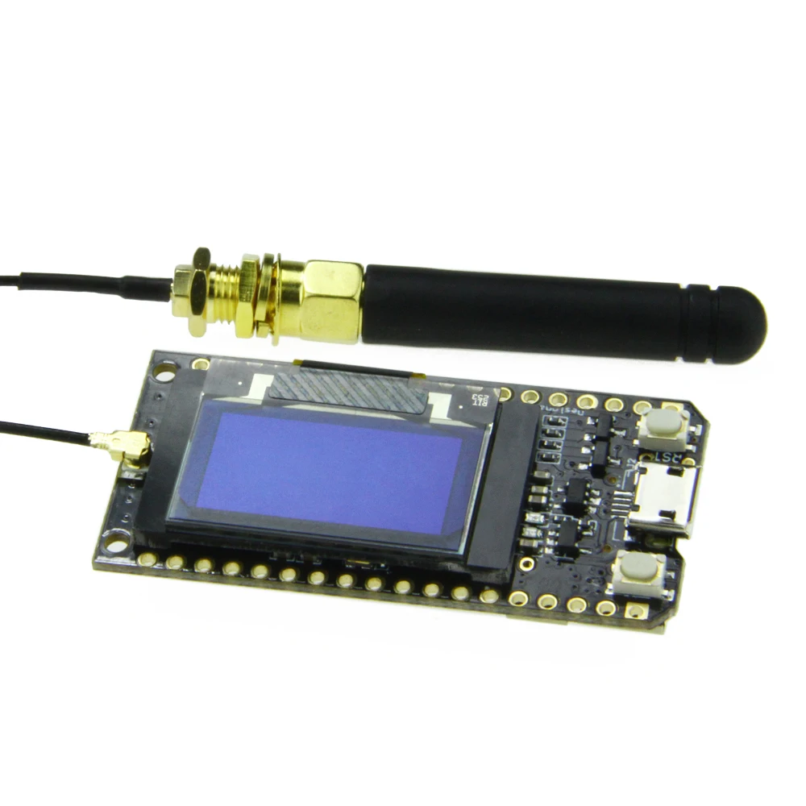
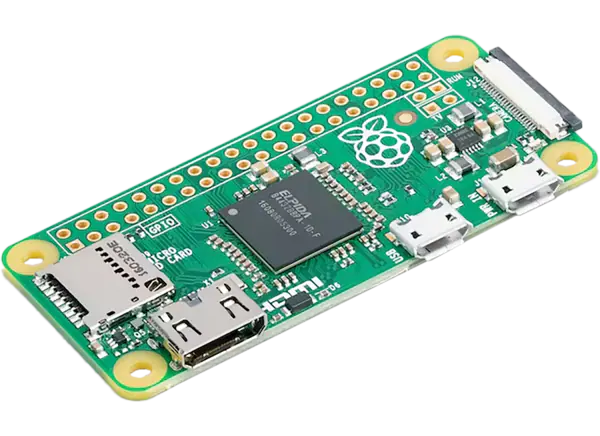

| Equipment |
 | ESP32 Wroom is the main basic board that we are programming. Has onboard WiFi/BT module. Works with both C++ and Micropython. Usually used for ESP-NOW protocol communication and general prototyping. |
|  | Similar to ESP32 Wroom, the only 2 differences of this board is onboard LoRa 868MHz module, a battery charging circuit and a display. We usually use these boards for LoRa experiments. |
|  | Raspberry Pi Zero is a small-sized board capable of running linux (Raspbian). It is used in out lab for data collection and/or machine learning applications. |
| | Raspberry Pi 4 Model B is a bread and butter board for more power-hungry computing on the edge (Still much bigger than Zero). Used in the lab usually for networking and computer vision. Also runs Raspbian. |
 | Raspberry Pi Pico, compared to its counterparts, does not run Raspbian, and is comparatively closer in usage to an ESP32 board. At this moment Picos are used in the lab in conjunction with SX1278 LoRa modules (similar to these) and are programmed in Micropython. |
 | Otii Arc 3 can be used as power analyzer, profiler or monitor to record and display real-time currents, voltages and/or UART logs. |